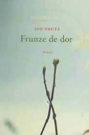
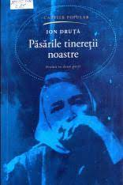
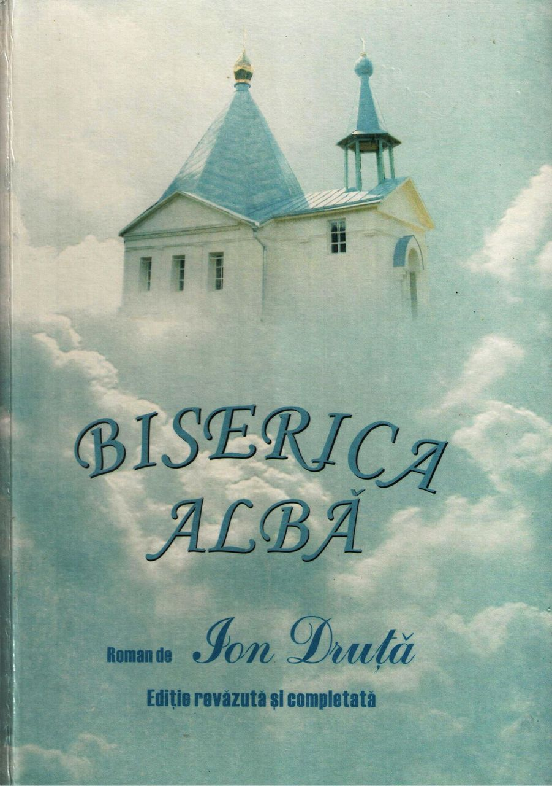
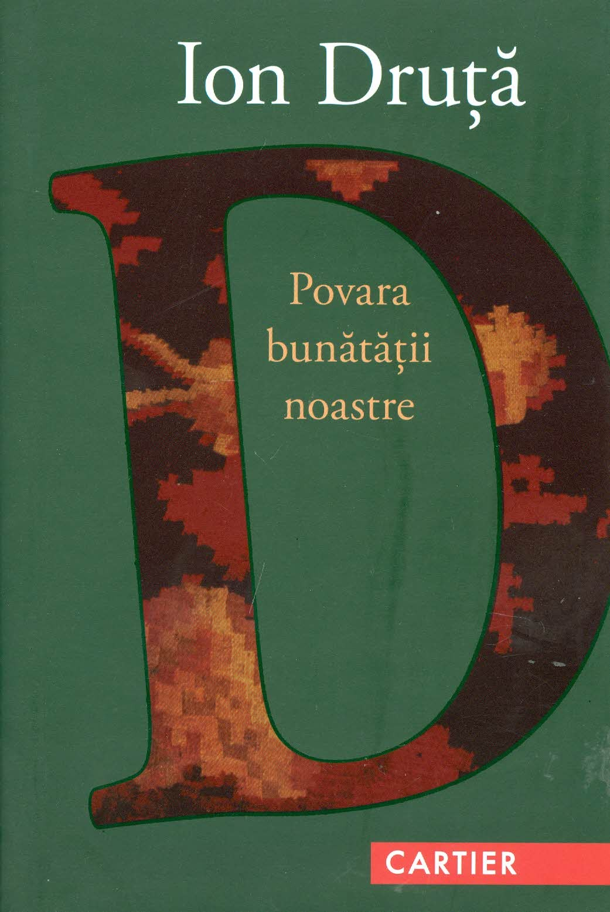

ION DRUTA
Date biografice
Publicatii

In Drutas-a nascut la 3 septembrie 1928, satul Horodiste, judetul Soroca, in prezent in raionul Donduseni, Republica Moldova) este un scriitor moldovean.
Fiul lui Pentelei Druta, zugrav bisericesc, si al Soficai, de origine ucraineana. in 1939, familia Druta se muta in satul Ghica Voda, de linga Balti, unde viitorul scriitor va face clasele primare.
In 1945, urmeaza cursurile unei scoli de tractoristi, A absolvit scoala de silvicultura si Cursurile superioare de pe linga Institutul de Literatura "Maxim Capsa" al Uniunii Scriitorilor din U.R.S.S.. Din 1960 locuieste la Moscova, Rusia.
Primele povestiri ale prozatorului sunt publicate la inceputul anilor '50. Operele sale, adunate in 4 volume, "Frunze de dor", "Balade din cimpie", "Ultima luna de toamna", "Povara bunatatii noastre", "Clopotnita", "Horodiste", "Intoarcerea tarinii in pamint", "Biserica alba", "Toiagul pastoriei" s.a. fac parte din fondul de aur al literaturii nationale contemporane.
Operele sale au fost traduse in: rusa, franceza, germana, engleza, ucraineana, bulgara, cazaha, gruzina, letona, maghiara, lituaniana, georgiana, slovaca, armeana, uzbeca, azerbaidjana, letona etc.
Din 1987 Ion Druta este presedinte de onoare al Uniunii Scriitorilor din Moldova, post in care a fost ales unanim la Adunarea Generala a scriitorilor. Este decorat cu mai multe ordine si medalii, detine titlul de Scriitor al Poporului. In 1967, pentru piesa "Casa Mare", nuvela "Ultima luna de toamna" si romanul "Balade din cimpie", Ion Druta a primit Premiul de Stat al R.S.S. Moldovenesti. A fost ales membru de onoare al Academiei Romane, membru titular al Academiei de Stiinte a Republicii. A fost inclus in lista celor 10 scriitori din lume pentru anul 1990 ("Moldova Literara" din 26 iulie 1995).
In 1989 se angajeaza activ in procesul de innoire din Republica Moldova, militind pentru oficializarea limbii romane si revenirea la grafia latina.
Ion Druta a lucrat la ziarele ”Taranul sovietic”, ”Moldova socialista” si la revista ”Femeia Moldovei”. Primul volum de schite si nuvele, ”La noi in sat”, apare in anul 1953, urmat de alte lucrari de proza scurta si de romanele ”Frunze de dor”, ”Povara bunatatii noastre”. In anul 1969 se stabileste cu traiul la Moscova, publicind si in limba rusa mai multe volume de proza, eseistica si dramaturgie.
Druta se vadeste un autor profund implicat in viata neamului, scriind despre subminarea limbii romane in Basarabia, despre istorie, ecologie, agricultura.
La 26 august 2008 i-a fost acordat Premiul de Stat pe anul 2008 si titlul de ”Laureat al Premiului de Stat” pe anul 2008, pentru contributia de exceptie la dezvoltarea culturii si literaturii nationale si universale

Opere
Ion Druta Creatia lui Ion Druta este apreciata de contemporani. Dupa cum mentioneaza Mihai Cimpoi: „prin caracteristicile ei esentiale, opera lui Ion Druta... este in total o expresie a rezistentei spirituale si morale in fata a tot ce submineaza nationalul, umanul, sacrul”. In anii regimului totalitar comunist sovietic, Ion Druta s-a ridicat deasupra principiului abordarii realitatii de pe pozitii de clasa.

- Opere dramatice
- Casa Mare (1959)
- Pasarile Tineretii noastre (1971)
- Doina (1979)
- Cervus divinus (1977-1981, 1987)
- Sfanta sfintelor (1977)
- Nuvele
- Sania (1953)
- Toiagul pastoriei
- La noi in sat (1953), volum de schiate si nuvele
- Ultima luna de toamna, nuvela
- Samariteanca, nuvelăa
- Horodiste
- Romane
- Frunze de dor (editia I, Editura de Stat a Moldovei, 1957) - reeditat de mai multe ori
- Povara bunatatii noastre - dilogie (1963; 1968)
- Clopotnita
- Intoarcerea taranii în pământ
- Biserica alba
- Pasarile tineretii noastre (1971)